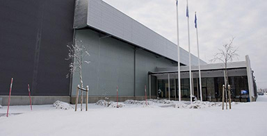

Les grandes entreprises comme les GAFAM (Google, Amazon, Facebook, Apple, Microsoft) ont commencé à se poser la question du coût environnemental des datacenters. Ils ont donc cherché des solutions à la fois informatiques et climatiques.
L'aération
Pour baisser le coût électrique dû au dioxyde de charbon (CO2), les centres de données doivent baisser leur consommation en électricité. L’une des premières pistes de réflexion est de baisser la consommation des climatiseurs. Pour se faire, les datacenters peuvent aérer les lieux en espaçant les serveurs pour faciliter le trajet de l’air. Facebook a choisi une autre solution en implantant l’un de ses centres près du cercle polaire, à Lulea, au nord de la suède. Cette solution permet de mettre à profit le climat froid de la suède, en particularité le vent polaire, pour consommer beaucoup moins d’électricité en climatiseur. Grace à ceci, le coût d’utilisation d’un système de refroidissement passe de 40% à 10%.

Un des serveurs de Facebook à Lulea en Suède
La rentabilisation informatique
Rendre les serveurs plus fiable et plus autonomes afin de faire plus confiance en eux et donc d’éviter la doublure de données dans le monde, est une autre solution.
Également au datacenter de Facebook à Lulea, un système d’autoréparation a été mis en place sur les machines. Lorsque qu’un serveur rencontre un problème informatique à cause d’un bug, le programme l’analyse et le répare. Cette solution permet d’assurer le fonctionnement continu des serveurs. Et donc d’avoir une totale confiance en eux pour éviter, dans le futur, le triplage et voire mieux le doublage des données : diminuant donc la consommation électrique d’autres datacenters.
Maintenance des serveurs d'un datacenter par un employé
ANR DataZERO
« Même si différents efforts ont été réalisés au niveau informatique dans les centres de données partiellement alimentés par
des énergies renouvelables, des améliorations sont encore possibles. L'efficacité énergétique dans les centres de données étant directement liée à la consommation de ressources d'un nœud de calcul, l'optimisation des performances et un ordonnancement efficace des calculs sont essentiels pour économiser l'énergie. La spécificité principale de notre approche est de placer le centre de données sous une contrainte de puissance, provenant entièrement d'énergies renouvelables : la puissance disponible peut ainsi varier au cours du temps.»
Le projet ANR DataZERO est une autre solution informatique en développement.
« L'ordonnancement de tâches sous ce genre de contrainte rend le problème plus difficile, puisqu'on doit notamment s'assurer qu'une tâche qui commence aura assez d'énergie pour aller jusqu'à son terme. Dans cette thèse, nous commençons par proposer une planification de tâches de type "batch" qui se caractérisent par leur instant d'arrivée, leur date d'échéance et leurs demandes de ressources tout en respectant une contrainte de puissance. Les données utilisées pour les tâches de type batch viennent de traces de centres de données et contiennent des mesures de consommation CPU, mémoire et réseau. Quant aux enveloppes de puissance considérées, elles représentent ce que pourrait fournir un module de décision électrique, c'est-à-dire la production d'énergie prévue (énergie renouvelable seulement) basée sur les prévisions météorologiques. »
Evolution des énergies renouvelables produites par les datacenters
« Par la suite, nous examinons une charge de travail composée de tâches de type "batch" et de services, où la consommation des ressources varie au cours du temps. Les traces utilisées pour les services proviennent d’un centre de données à "business critique". Dans ce cadre, nous envisageons le concept de phases, dans lequel les changements significatifs de
consommation de ressources à l'intérieur d'une même tâche marquent le début d'une nouvelle phase. »
« L'objectif est de maximiser la Qualité de Service avec une contrainte sur la puissance électrique. »
« Nous considérons également un modèle de tâches pouvant recevoir moins de ressources que demandées. Nous étudions l'impact de ce modèle sur le profit du centre de données pour chaque type de tâche. Nous intégrons aussi le concept de "corrélation croisée" pour évaluer où placer une tâche selon une courbe de puissance afin de trouver le meilleur nœud pour placer plusieurs tâches (c.-à-d. Partager les ressources).»
«Enfin, nous présentons une approche pour faire face à des événements inattendus tels que des tâches exigeantes plus ou moins de ressources que prévu, ou ayant une date de fin différente, et étudions les actions possibles, compte tenu de la dégradation des tâches et de l'impact sur le profit du centre de données. »
Une agence web vertueuse
Qarnot est une entreprise créé dans le but de valoriser la chaleur des appareils électroniques, en particulier les ordinateurs et centre de données. En créant le radiateur-ordinateur, ils utilisent la chaleur émise par les calculs numériques pour réchauffer des bâtiments.
Conclusion
Les centres de données cherchent à consommer moins d’énergie grâce à des solutions à la fois thermiques et informatiques. Ce gain peut leur faire aussi gagner de l’argent à long terme.